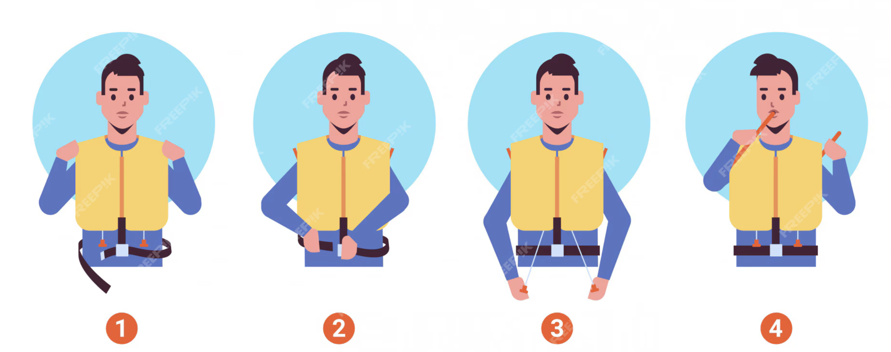
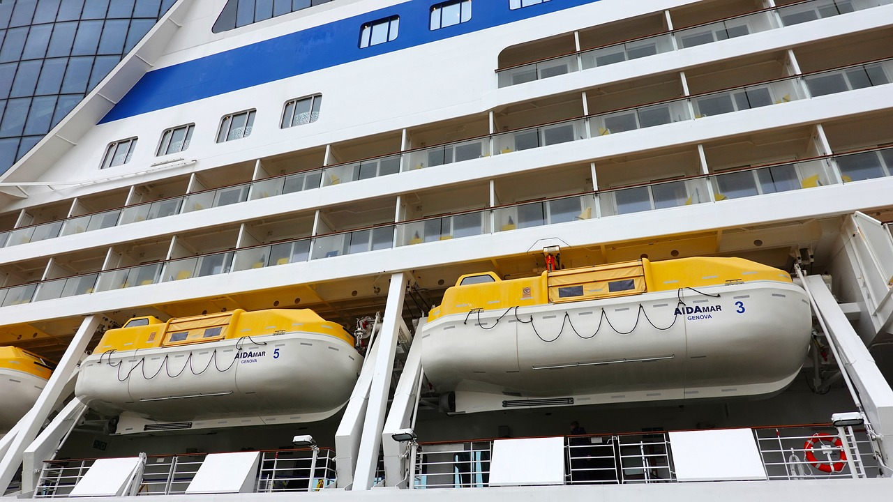

Medidas de Seguridad
En Costa Fascinosa, la seguridad de nuestros pasajeros es nuestra prioridad. A continuación, le explicamos los procedimientos a seguir en caso de emergencia.
Protocolo Titanic
En caso de algún evento desafortunado, apriete el siguiente botón.
Procedimiento de Emergencia
En caso de una emergencia, todos los tripulantes y pasajeros deben dirigirse a la **proa** del barco, siguiendo las instrucciones del personal a bordo.
Es importante permanecer tranquilo y escuchar las indicaciones. El personal entregará **chalecos salvavidas** a cada pasajero y ayudará a colocarlos correctamente. A continuacion las instrucciones para su colocacion: 
Uso de Botes Salvavidas
Los **botes salvavidas** están ubicados en la proa del barco y pueden ser utilizados para evacuar a los pasajeros en caso de necesidad. Sigue las instrucciones del personal para abordar los botes de manera segura y ordenada. 
Simulacros de Emergencia
Durante el viaje, se realizarán simulacros de emergencia para que todos los pasajeros conozcan los procedimientos y rutas de evacuación. Tu participación es obligatoria para garantizar tu seguridad.